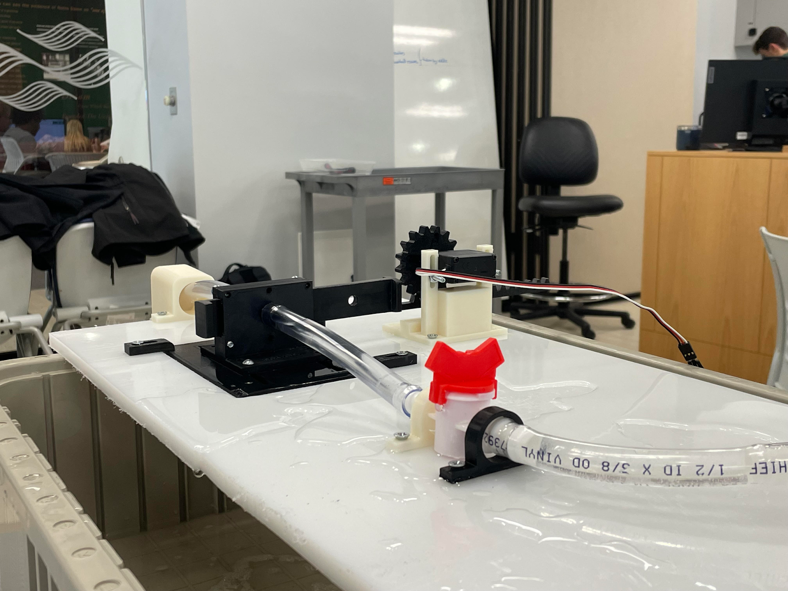
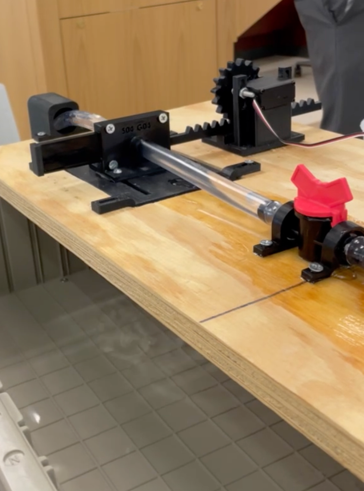
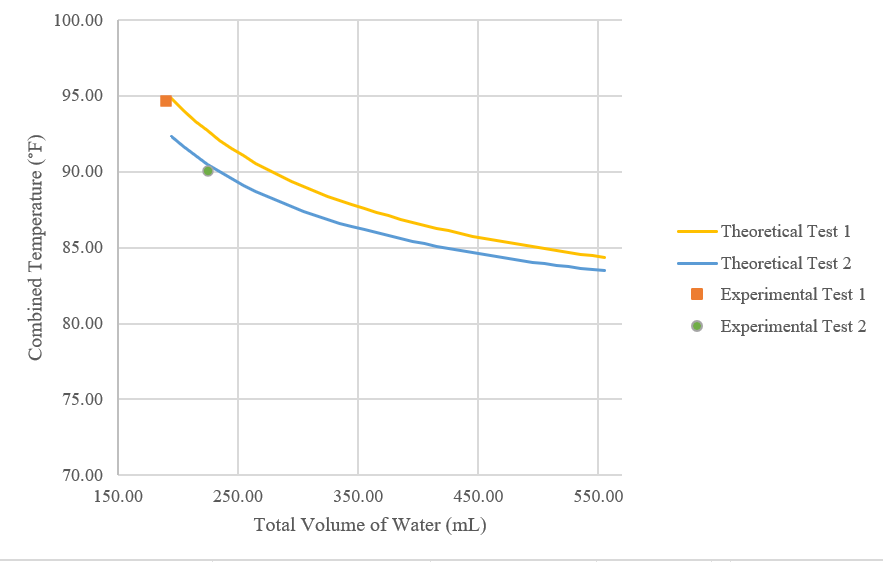
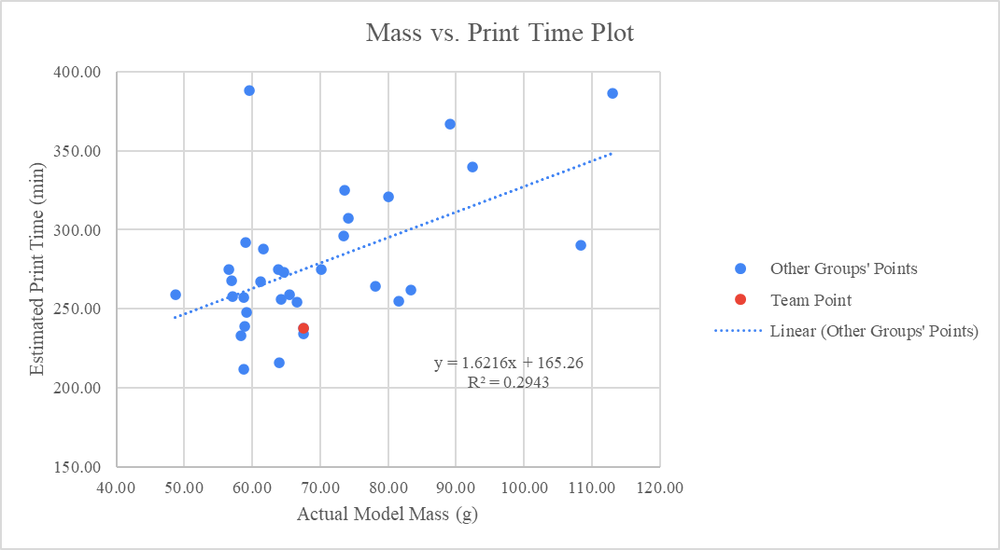
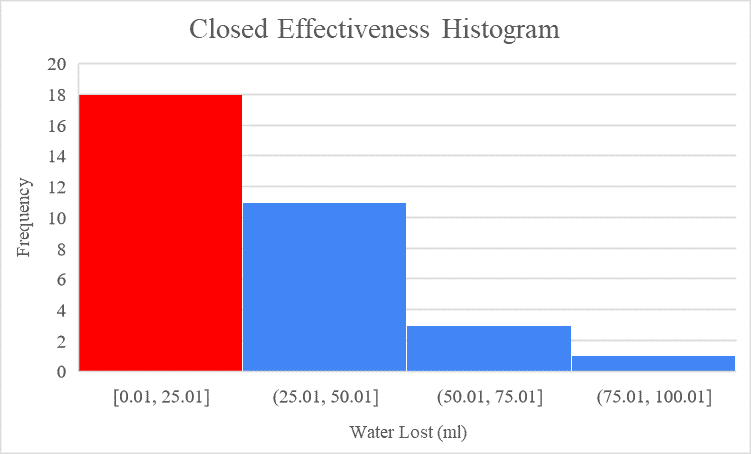
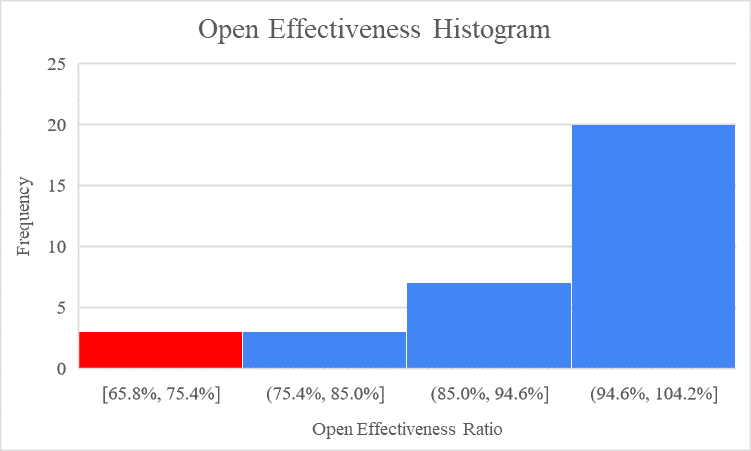
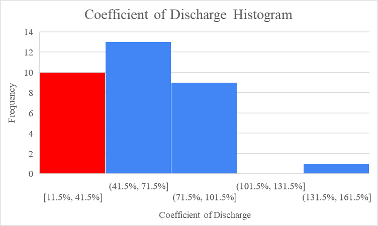

Matt Giordano
____________________________________
Jack Keller
____________________________________
Dominick Johnson
____________________________________
Cameron Rohlfsen
I. Needs Assessment and Problem Formulation
The customer for this project is a non-profit company seeking a proof-of-concept design for a system that releases chlorine into bodies of water to disinfect the water. In these initial iterations, hot and cold water will be used to test the prototypes instead of chlorine and contaminated water. The need for the project is a design for a system that can measure the temperature of two water sources using a sensor, uses a valve that controls the water flow from a cold water tank to a hot water container, uses a motor to control the flow of water by connecting to a microcontroller, and opens a valve for a precalculated time to allow the target temperature to be reached.
The valve designed for the prototype has many artifacts due to the preexisting valves in the world. For this project, the two valves that the group considered were the ball valve and the sliding gate valve. Ultimately, the sliding gate valve was chosen to be the valve between the cold and hot water bodies.
For the project, there were explicit and implicit requirements. Some of the explicit requirements for this project were the valve must have an “open” and “closed” position, the valve must consist of at least two parts, which must interface with one another, and the valve must be 3D printed in under seven hours. Some requirements that were not explicitly stated but are implicitly implied are that the valve should not leak water and that the valve should be economical, with the material cost being a factor in the design.
II. Abstraction & Synthesis, Analysis, and Implementation: First Cycle
The type of valve chosen for the final design was a gate valve. The gate valve has two supporting walls that enclose the sliding part of the valve that moves from open to closed positions. The sliding part has a gear track attached to interface with the gear. Both sides of the wall have cylindrical extrusions to connect to the water tubes. The valve contains small screw holes so that the valve remains attached to the surface. One application of gate valves in the real world is a subsea gate valve. According to the Subsea Engineering Handbook (2019), gate valves have been a critical feature of subsea blowout preventer stacks, trees, and manifolds. Due to the developments and improvements of both valves and actuators, they are viewed as reliable tools [1]. Figure 1 shows the initial design for the valve.
A ball valve was considered for the project but ultimately rejected due to the criteria for this project. It was less complicated to envision the structure of the gate valve from a 3D modeling perspective, which saved the group time during the design process. Additionally, gate valves require less attention to the nuances of rotational motion used by ball valves, which is helpful during data collection.
|
Figure 1. Valve Design from Iteration One |
Table 1 outlines the results from the two effectiveness tests in the first design iteration, including the closed effectiveness values (water lost) and open effectiveness ratios for both tests. The results from the table can be attributed to the fact that an unexpected air pocket existed near the tubing interface during test one, possibly due to the height of the tubing interface. In addition, the design experienced unforeseen leakage around the control valve. This was also an issue during the second test; however, after straightening the position of the water tube, the air pocket became smaller. This resulted in a higher open effectiveness ratio for the second test.
Table 1. Effectiveness Tests for Iteration One
|
Closed Effectiveness Test (mL) |
Open Effectiveness Ratio (In %) |
||
|
Test #1 |
Test #2 |
Test #1 |
Test #2 |
|
10 |
20 |
60 |
79 |
Table 2 shows the results from the water mixing tests in the first iteration, including the target temperature, observed temperatures, and discharge coefficients. During the first iteration, the observed combined temperature did not get close to the target temperature due to a smaller volume of cold water being added than intended. This is shown by the relatively low coefficients of discharge in Table 2. The most likely cause of these values is the continuous leakage around the control valve area.
Table 2. Water Mixing Tests for Iteration One
|
Target Temperature (℉) |
Observed Combined Temperature (℉) |
Discharge Coefficient |
||||
|
Test #1 |
Test #2 |
Test #3 |
Test #1 |
Test #2 |
Test #3 |
|
|
88 |
98 |
95 |
95 |
0.33 |
0.41 |
0.39 |
III. Abstraction & Synthesis, Analysis, and Implementation: Second Cycle
The gate valve designed in the second iteration has a similar design to the first, with two supporting walls that enclose the sliding part of the valve. However, the sliding gate has been made to be significantly shorter than the previous design, weighing 8.2 grams less, allowing for a quicker transition between an open and closed position. The sliding portion of the gear track is attached to the gear. The gear causes the horizontal motion, allowing the valve to move between positions. However, the degree of rotation of the gear had to be altered for precision. An extrusion on both sides of the valve connects to the tubes, along with small holes that allow for screws to connect the pieces. During the first demonstration day, the valve met all of the printing and testing requirements. However, 0.9855 inches was sanded off the gate to allow for easier sliding. Other than that, the parts fit together adequately, the gear was aligned with the horizontal ridges, and the water tubes fit over the printed pipe. During testing, some water was leaking from the control and printed valves. An air pocket at the tube interface also negatively impacted the water flow. Each of these constraints was considered when redesigning the valve for the Second Demonstration Day. Figure 2 below shows the valve connected to the test setup in an open state.
Figure 2. Open Valve on Second Demonstration Day
Table 3 contains the proposed changes for the second iteration, reasons why the changes are necessary, and the outcome of these changes during the Second Demonstration Day.
Table 3. Changes to Valve Design for Second Iteration
|
Proposed Change |
Reason Why Change is Necessary from the First Iteration |
Outcome |
|
Increase the thickness of the teeth from 0.4 inches to 0.5 inches. |
The thickness of the teeth on the rack for the first iteration was lower than the thickness of the gear. |
The increased thickness of the gear teeth allowed the teeth to mesh smoothly with the teeth on the rack. This allowed the valve to open and close more quickly than the first iteration and minimized the risk of jamming. |
|
Remove excess material on the sliding gate. |
There is excess material that makes the sliding gate longer than it needs to be. The extra material does not cover the hole, making it unnecessary. |
The valve went from 75.8g to 67.6g by removing excess mass from the first iteration. The shorter, lighter gate sped up the valve opening and closing process. |
|
Remove 3 unneeded gears teeth from the gear rack. |
The unneeded teeth have caused the valve to open and close slower than it should. |
Having fewer teeth in the second iteration allowed for a more efficient valve that can quickly change between open and closed positions. The unneeded teeth on the gear rack for the first iteration caused the system to lose power as energy is transferred through multiple gears even when not required. |
|
Lower the valve connection hole to 0.5 inches above the surface level. |
The valve connection hole must be lowered so that gravity can pull the water down through the tubes for the water to flow more efficiently. |
This change allowed water to go through the valve at a faster speed. It created a better angle for the water to flow and decreased the chances of developing an air bubble in the tubing that caused leaking. As a result, 50mL of water, 35mL more than the first iteration, could flow into the graduated cylinder during the second iteration. With more water flowing quickly, the valve allowed it to reach the target temperature of 89° F. |
|
Shift the valve hole to the left by 1 inch. |
This is to decrease the use of excess material while keeping the function of the valve working. |
By shifting the hole over, less material was needed to print the valve for the second iteration. This allowed the valve to meet the mass criteria of having a 15% mass deduction. Having a lighter valve makes it more cost-efficient for the customer. |
|
Decrease gate height from 1 inch to 0.99 inch. |
Decreasing the height of the gate by 0.99 inches allows for a smooth transition from open to closed state. |
No modifications were needed, with the measurements being slightly adjusted during this iteration to account for tolerance. The valve interfaced well with all of the pieces. |
Table 4 outlines the results from the two effectiveness tests in the second design iteration, including the closed effectiveness values (water lost) and open effectiveness ratios for both tests. During both tests, water was lost and was not able to flow through the valve into the reserve tank. One of the reasons for this leakage was due to an air pocket at the interface. Although this air pocket was smaller than the air pocket that was formed during the First Demonstration Day, it still negatively impacted the flow of water. The second issue was that there was leaking coming from the control valve. Both issues were later resolved after ensuring that the control valve was fully opened. This significantly decreased the amount of leaking from the control valve and allowed the water to pass through the valve at a much higher flow rate, in which the air bubble no longer mattered.
Table 4. Effectiveness Tests For Iteration Two
|
Closed Effectiveness Test (mL) |
Open Effectiveness Ratio (In %) |
||
|
Test #1 |
Test #2 |
Test #1 |
Test #2 |
|
22 |
22 |
73 |
82 |
Table 5 shows the results from the water mixing tests in the second iteration, including the target temperature, observed temperatures, and discharge coefficients. Similar to the First Demonstration Day, the combined temperature for the first test in the second iteration didn’t get very close to the target temperature. Because of leakage and a low flow rate, the cold water added was lower than it needed to be. This is shown by the relatively low coefficients of discharge in Table 5. The result of the low flow rate was due to the control valve not being completely opened. After fully opening the control valve for the second test, the flow rate of the cold water significantly increased as an additional 35 mL of water was able to pass through the valve. This allowed the observed temperature to become a lot closer to the target temperature, with a more normal discharge coefficient.
Table 5.Water Mixing Tests for Iteration Two
|
Target Temperature (℉) |
Observed Combined Temperature (℉) |
Discharge Coefficient |
||||||||||
|
Test #1 |
Test #2 |
Test #1 |
Test #2 |
|||||||||
|
89.0 |
94.66 |
90.05 |
.11 |
.61 |
||||||||
Figure 3 below displays a scatter plot that shows the actual measured temperature and volume of the water from both tests during the Second Demonstration Day compared to the theoretical data. Experimental Test 1 resulted in an observed combined temperature that was significantly higher than the theoretical observed temperature. However, Experimental Test 2 resulted in a much more accurate combined temperature when compared to Theoretical Test 2.
Figure 3.A scatter plot of the Combined Temperature and Total Volume of Water shows the results from the open position effectiveness experiment during the Second Demonstration Day.
IV. Final Comparisons and Recommendations
Figure 4 is a scatter plot showing the relationship between the mass of the model and print time for closed gate valves. The positive slope proves that there is a positive correlation between actual model mass and estimated print time, as shown in Figure 4. The team’s valve falls below the trend line. This points to an efficient/simple design as it took less time per gram of mass to print.
Figure 4. Mass vs. Print Time Scatter Plot
Figure 5 is a histogram of all volumes of water lost for gate valves during the Second Demonstration Day. Most teams’ water loss falls in the first and second bins of the histogram. This right skew shown in Figure 5 illustrates that most teams had effective valves while closed. The team’s closed effectiveness value of 10 ml points to an effective valve when closed compared to the mean water loss of 30.36 ml. However, it is not an outlier because the standard deviation is 23.36 ml.
Figure 6 is a histogram showing the open effectiveness for all gate valves on the Second Demonstration Day. Open Effectiveness is the ratio between the amount of water that passes through the valve and the change in the water tank. Most teams’ open effectiveness ratio falls in the last two bins of the histogram. This left skew, shown in Figure 6, illustrates that most teams had effective valves while open. The team’s open effectiveness ratio of 73.3% is very low compared to the mean of 92.3% when taking into account the standard deviation of 8.8%.
 Figure 5. Closed Effectiveness Histogram Figure 6. Open Effectiveness Histogram
Figure 7 is a histogram showing the coefficients of discharge for all gate valves on the Second Demonstration Day. The coefficient of discharge is the ratio between the actual and theoretical amount of water added to the graduated cylinder. Because there is a bin between the data and one of the teams’ coefficients in Figure 7, it can be stated that this coefficient is an outlier. Otherwise, the data is normally distributed in Figure 7 and ranges from 11.5% to 101.5%, pointing to a wide range of coefficients found during the Second Demonstration Day. The team’s discharge coefficient of 11.5% was much lower than the mean of 58.6%. However, this data was skewed by human error. The control valve was not completely open in this experiment. Once it was correctly opened, the new coefficient of discharge of 61% fell within one standard deviation (27.4%) of the mean. However, even the new coefficient fell below the typical coefficient for gate valves of .95 [2].
Figure 7. Coefficient of Discharge Histogram
In future prototype development, the group should consider increasing the depth of the gate. The low open effectiveness shown in Figure 6 proves that there was significant water loss when the valve was open. If the gate fits more flush with the other pieces of the valve, there would be less water loss out of the sides and a better open effectiveness ratio. Also, the team should consider decreasing the height of the circular opening in the gate. Although this change was made after Iteration 1, improvement was still needed. The tube was not parallel to the surface, so the water had to go up to get through the gate. If it were parallel, the coefficient of discharge would be greater as the water flow would not be going against gravity.
Future iterations must consider the erosion of the material used. The best PVC plastic valves are typically rated for pressures up to 150 psi at 75° F [3]. If the iteration uses plastic, it must use a higher grade than PVC, which is the most common, or it will risk environmental damage due to the plastic. The valve will also lose its functionality due to the pressure. An additional consideration to make when applying this valve to its chlorinated functional use is the reaction with the material with chlorine in any way that would exist and how it might affect the valve and system as a whole.
Bibliography
[1] Y. Bai and Q. Bai, 19 - Subsea Manifolds. Boston: Gulf Professional Publishing, 2019, pp. 517–571.
[2] United States Department of the Interior Bureau of Reclamation STUDY OF GATE VALVES AND GLOBE VALVES AS FLOW REGULATORS FOR IRRIGATION DISTRIBUTION SYSTEMS UNDER HEADS UP TO ABOUT 125 FEET OF WATER, https://www.usbr.gov/tsc/techreferences/hydraulics_lab/pubs/HYD/HYD-337.pdf. 1956. (accessed Nov. 22, 2023).
[3] “The pros & cons of Plastic Valves,” CPV Manufacturing, https://www.cpvmfg.com/news/medal-goes-advantages-disadvantages-plastic-valves/ (accessed Nov. 21, 2023).
/11